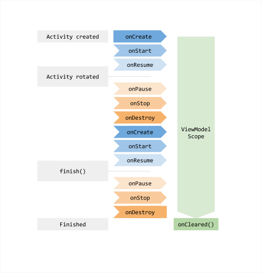

ViewModel 类是业务逻辑或屏幕级状态持有者。它向 UI 公开状态，并封装相关业务逻辑。其主要优势是缓存状态，并在配置变更期间保留状态。这意味着在 Activity 之间导航，或在旋转屏幕等配置变更后，UI 无需再次获取数据。
有关状态持有者的更多信息，请参阅状态持有者指南。同样，有关 UI 层的一般信息，请参阅 UI 层指南。
ViewModel 的优势
ViewModel 的替代方案是使用一个普通类，持有 UI 中显示的数据。在 Activity 或 Navigation 目的地之间导航时，这可能会产生问题。如果没有使用保存实例状态机制存储数据，这样做就会销毁数据。ViewModel 提供了方便的数据保留 API，可以解决此问题。
另外，对于纯粹的状态持有者，Compose 提供了 retain 能力，使普通类能够在配置变更后存活，而无需 ViewModel 的完整基础设施。虽然这两种机制都有助于保留状态，但通常将 ViewModel 提供给被保留的实例更安全，而不是反过来，因为它们的生命周期和清理行为有所不同。
ViewModel 类的关键优势主要有两点：
- 允许保留 UI 状态。
- 提供对业务逻辑的访问。
保留
ViewModel 允许保留其持有的状态，以及由其触发的操作。这种缓存意味着在屏幕旋转等常见配置变更后，不必再次获取数据。
作用域
实例化 ViewModel 时，需要向它传递一个实现 ViewModelStoreOwner 接口的对象。它可以是 Navigation 目的地、导航图、Activity，或任何其他实现该接口的类型。也可以使用 rememberViewModelStoreOwner API，将 ViewModel 的作用域直接限定为某个可组合项。随后，ViewModel 的作用域就与 ViewModelStoreOwner 的 Lifecycle 关联。它会一直留在内存中，直到其 ViewModelStoreOwner 永久消失（例如可组合项所有者退出组合时）。
有一系列类是 ViewModelStoreOwner 接口的直接或间接子类。直接子类是 ComponentActivity 和 NavBackStackEntry。完整的间接子类列表请参阅 ViewModelStoreOwner 参考文档。要将 ViewModel 的作用域限定为 LazyList 或 Pager 中的各个条目，请使用 rememberViewModelStoreProvider() 将所有者管理提升到父级。
当宿主 Activity 发生配置变更时，无论 ViewModel 的作用域是 Activity 还是某个特定可组合项，异步工作都会在 ViewModel 中继续。这是实现保留的关键。
有关详情，请参阅下文的 ViewModel 生命周期一节、ViewModel 作用域 API，以及 Jetpack Compose 的状态提升指南。
SavedStateHandle
SavedStateHandle 不仅允许在配置变更期间保留数据，也允许跨越进程死亡保留数据。也就是说，即使用户关闭应用并在稍后打开，它也能使 UI 状态保持完整。
有关保存 UI 状态的更多信息，请参阅在 Compose 中保存 UI 状态。
访问业务逻辑
虽然绝大多数业务逻辑位于数据层，但 UI 层也可以包含业务逻辑。例如，需要组合多个 Repository 的数据来创建屏幕 UI 状态时，或某种数据不需要数据层时，就可能如此。
ViewModel 是处理 UI 层业务逻辑的合适位置。当需要应用业务逻辑来修改应用数据时，ViewModel 还负责处理事件，并将它们委托给层次结构中的其他层。
实现 ViewModel
下面是一个 ViewModel 的实现示例，对应的屏幕允许用户掷骰子。
data class DiceUiState(
val firstDieValue: Int? = null,
val secondDieValue: Int? = null,
val numberOfRolls: Int = 0,
)
class DiceRollViewModel : ViewModel() {
// Expose screen UI state
private val _uiState = MutableStateFlow(DiceUiState())
val uiState: StateFlow<DiceUiState> = _uiState.asStateFlow()
// Handle business logic
fun rollDice() {
_uiState.update { currentState ->
currentState.copy(
firstDieValue = Random.nextInt(from = 1, until = 7),
secondDieValue = Random.nextInt(from = 1, until = 7),
numberOfRolls = currentState.numberOfRolls + 1,
)
}
}
}
随后，可以从屏幕级可组合项中按如下方式访问 ViewModel：
import androidx.lifecycle.viewmodel.compose.viewModel
// Use the 'viewModel()' function from the lifecycle-viewmodel-compose artifact
@Composable
fun DiceRollScreen(
viewModel: DiceRollViewModel = viewModel()
) {
val uiState by viewModel.uiState.collectAsStateWithLifecycle()
// Update UI elements
}
在 ViewModel 中使用协程
ViewModel 包含对 Kotlin 协程的支持。它能够以保留 UI 状态的相同方式保留异步工作。
有关详情，请参阅在 Android 架构组件中使用 Kotlin 协程。
ViewModel 的生命周期
ViewModel 的生命周期直接与其作用域绑定。ViewModel 会一直保留在内存中，直到其作用域对应的 ViewModelStoreOwner 消失。这可能发生在以下情况下：
- 对于 Activity，在它结束时。
- 对于 Navigation 条目，在它从返回栈中移除时。
- 对于可组合项，在它退出组合时。可以使用
rememberViewModelStoreOwner将 ViewModel 的作用域直接限定为 UI 的任意部分（例如Pager或LazyList）。
这使 ViewModel 成为存储需要在配置变更后保留的数据的绝佳方案。
图 1 展示了 Activity 经历旋转、随后结束时的各个生命周期状态。图中还在关联的 Activity 生命周期旁展示了 ViewModel 的存活时间。这张图具体展示的是 Activity 的各个状态。

通常，在系统首次调用 Activity 对象的 onCreate() 方法时请求 ViewModel。在 Activity 存在期间，系统可能多次调用 onCreate()，例如设备屏幕旋转时。从首次请求 ViewModel 开始，ViewModel 就一直存在，直到 Activity 结束并被销毁。
清理 ViewModel 依赖项
当 ViewModelStoreOwner 在其生命周期过程中销毁 ViewModel 时，ViewModel 会调用 onCleared 方法。这使你能够清理任何遵循 ViewModel 生命周期的工作或依赖项。
以下示例展示了 viewModelScope 的替代方式。viewModelScope 是自动遵循 ViewModel 生命周期的内置 CoroutineScope，ViewModel 使用它触发业务相关操作。如果为了更方便地测试，希望使用自定义作用域代替 viewModelScope，可以让 ViewModel 在构造器中接收 CoroutineScope 依赖项。当 ViewModelStoreOwner 在生命周期结束时清理 ViewModel，ViewModel 也会取消该 CoroutineScope。
class MyViewModel(
private val coroutineScope: CoroutineScope =
CoroutineScope(SupervisorJob() + Dispatchers.Main.immediate)
) : ViewModel() {
// Other ViewModel logic ...
override fun onCleared() {
coroutineScope.cancel()
}
}
从 Lifecycle 2.5 版本开始，可以向 ViewModel 构造器传入一个或多个 Closeable 对象，它们会在 ViewModel 实例被清理时自动关闭。
class CloseableCoroutineScope(
context: CoroutineContext = SupervisorJob() + Dispatchers.Main.immediate
) : Closeable, CoroutineScope {
override val coroutineContext: CoroutineContext = context
override fun close() {
coroutineContext.cancel()
}
}
class MyViewModel(
private val coroutineScope: CoroutineScope = CloseableCoroutineScope()
) : ViewModel(coroutineScope) {
// Other ViewModel logic ...
}
最佳实践
以下是实现 ViewModel 时应遵循的几项关键最佳实践：
- 由于 ViewModel 的作用域机制，应将 ViewModel 用作屏幕级状态持有者的实现细节。不要将它们用作标签组或表单等可复用 UI 组件的状态持有者。否则，在同一个 ViewModelStoreOwner 下多次使用同一个 UI 组件时，会得到同一个 ViewModel 实例，除非为每个标签使用显式的 ViewModel 键。
- ViewModel 不应了解 UI 的实现细节。ViewModel API 公开的方法名称，以及 UI 状态字段的名称，应尽可能通用。这样，ViewModel 就能适应任何类型的 UI：手机、折叠屏、平板，甚至 Chromebook！
- 由于 ViewModel 的存活时间可能长于
ViewModelStoreOwner，为防止内存泄漏，ViewModel 不应持有Context或Resources等与生命周期相关的 API 的任何引用。 - 不要将 ViewModel 传递给其他类、函数或其他 UI 组件。由于它们由平台管理，应使其尽可能靠近平台——靠近 Activity、屏幕级可组合函数或 Navigation 目的地。这可以防止较低层组件访问超出所需的数据和逻辑。
更多信息
随着数据变得更加复杂，可以选择使用单独的类专门加载数据。ViewModel 的目的是封装 UI 控制器的数据，使数据能够跨配置变化存活。有关如何在配置变化期间加载、持久化和管理数据，请参阅保存 UI 状态。
Android 应用架构指南建议构建仓库类来处理这些功能。
其他资源
有关 ViewModel 类的更多信息，请参阅以下资源。